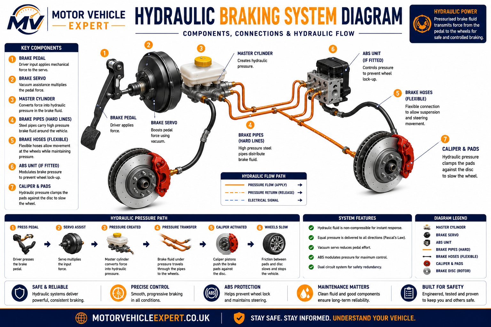
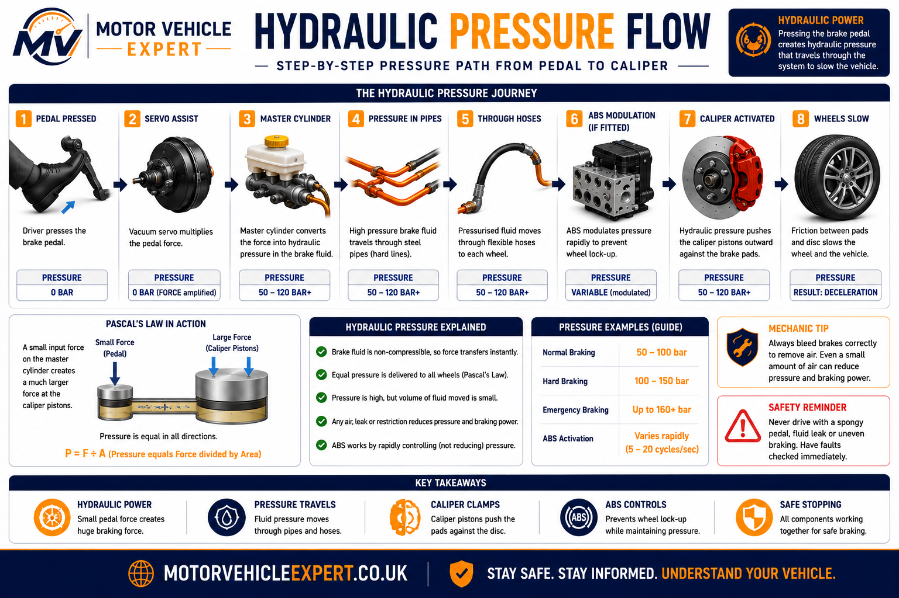
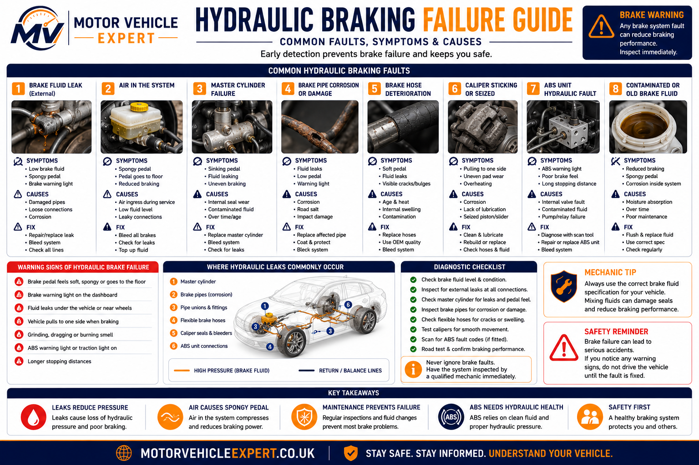
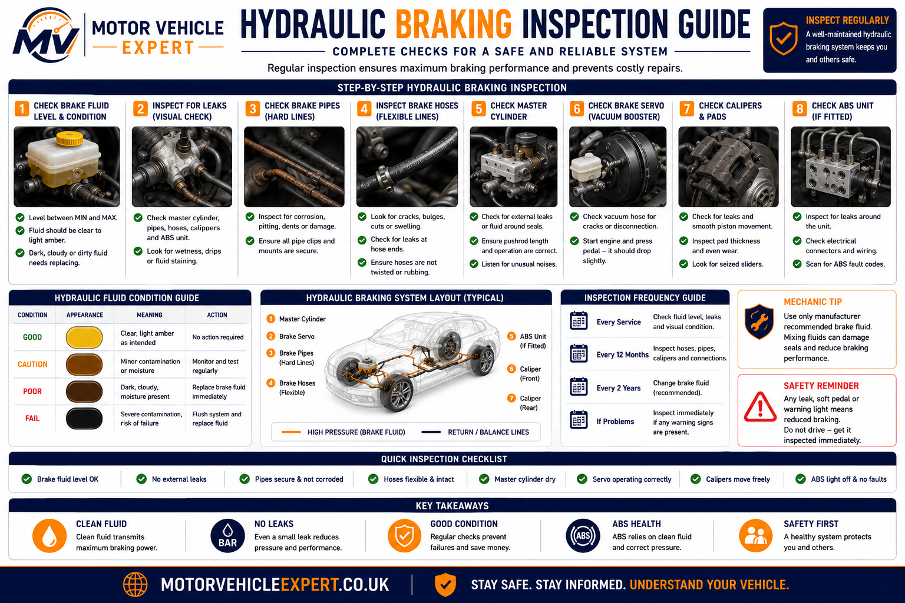

What is a hydraulic braking system?
A hydraulic braking system uses pressurised brake fluid to transfer force from the brake pedal to the wheel brakes. When the driver presses the pedal, the brake servo assists the force, the master cylinder pressurises the brake fluid, and that pressure travels through brake pipes, brake hoses and the ABS hydraulic unit before reaching the brake calipers.
At each wheel, hydraulic pressure moves the caliper pistons. The pistons push the brake pads against the brake discs, creating friction that slows the vehicle. The system works because brake fluid does not compress easily, so pressure can travel quickly and evenly through a sealed hydraulic circuit.
Input
Brake pedalThe driver applies foot pressure. The brake servo helps multiply this force before it reaches the master cylinder.
Pressure
Master cylinderThe master cylinder converts pedal movement into hydraulic pressure inside the brake fluid.
Output
Brake calipersCaliper pistons use hydraulic pressure to clamp the pads against the brake discs and slow the wheels.
Hydraulic brakes should feel firm, progressive and consistent. A sudden soft pedal, sinking pedal, low fluid level or visible leak usually means pressure is being lost somewhere in the system.
What does the hydraulic braking system do?
The hydraulic braking system is the part of the braking system that carries force. The brake pads and discs create the friction, but the hydraulic system is what delivers the force needed to apply them. Without hydraulic pressure, the calipers cannot clamp the pads properly and the vehicle cannot stop safely.
On most modern cars, the hydraulic circuit includes the brake pedal, servo, master cylinder, brake fluid reservoir, rigid metal brake pipes, flexible brake hoses, ABS hydraulic modulator and wheel brake calipers. These parts must remain sealed, clean and correctly bled for the brakes to work as designed.
Why the system is powerful
A small movement at the pedal can create high pressure in the brake fluid. That pressure is then transmitted to the calipers, where it becomes clamping force at the brake discs.
Why the system must stay sealed
Any leak, trapped air, weak seal, swollen hose or contaminated fluid can reduce pressure transfer. That can make the brake pedal feel soft, long or unsafe.
Hydraulic brake faults are safety-critical. A vehicle with a brake fluid leak, severely corroded brake pipe, damaged brake hose or sinking brake pedal should not be driven until inspected and repaired.
Hydraulic Braking System Diagram
The diagram below shows the complete hydraulic pressure route from the driver's foot to the wheel brakes. It helps explain why a fault in one area, such as the master cylinder, brake pipe, hose, ABS unit or caliper, can affect the whole braking system.

Pedal and servo
The pedal provides the driver's input. The brake servo uses vacuum or electric assistance to reduce the amount of leg force required.
Brake servo explained →Master cylinder
The master cylinder is the hydraulic pump. It converts pedal movement into pressurised brake fluid flow.
Master cylinder explained →Calipers
Brake calipers convert hydraulic pressure into mechanical clamping force at the brake discs.
Brake calipers explained →When diagnosing hydraulic brake faults, follow the pressure path in order: pedal feel, servo assistance, master cylinder output, fluid level, brake pipes, flexible hoses, ABS unit and calipers.
How Hydraulic Brakes Work
Hydraulic brakes work by converting the pressure applied by the driver's foot into hydraulic force that is transmitted through brake fluid to each wheel. Instead of mechanical rods or cables, the system relies on an enclosed hydraulic circuit that distributes pressure rapidly and evenly throughout the vehicle.
When the brake pedal is pressed, the brake servo multiplies the driver's input before it reaches the master cylinder. The master cylinder then pressurises the brake fluid inside the hydraulic circuit. Because brake fluid is virtually incompressible, this pressure travels almost instantly through the brake pipes, flexible brake hoses and ABS hydraulic unit until it reaches each brake caliper.
Inside every brake caliper, hydraulic pressure pushes one or more pistons outward. These pistons clamp the brake pads against the rotating brake discs. The friction generated between the pads and discs converts the vehicle's kinetic energy into heat, slowing the wheels and bringing the vehicle safely to a stop.
1. Pedal Input
The driver presses the brake pedal. The brake servo increases pedal force so heavy braking requires less physical effort.
2. Pressure Created
The master cylinder converts pedal movement into hydraulic pressure inside the brake fluid.
3. Pressure Travels
Brake fluid carries hydraulic pressure through brake pipes, flexible hoses and the ABS hydraulic modulator to every wheel.
4. Vehicle Stops
Brake caliper pistons clamp the brake pads against the brake discs, creating friction that slows the vehicle.
Hydraulic pressure is transmitted equally throughout the sealed brake circuit, allowing a relatively small movement at the brake pedal to create several tonnes of clamping force at the brake discs. This makes hydraulic braking smooth, predictable and extremely powerful while maintaining excellent control during normal driving and emergency braking.
How Hydraulic Pressure Travels Through The Braking System
One of the easiest ways to understand hydraulic braking is to follow the path that brake pressure takes through the system. Every component has a specific job, and if pressure is lost anywhere along this route the braking performance of the entire vehicle can be affected.

The diagram above illustrates the complete pressure path from the driver's foot to the brake calipers. Following this sequence is also the method professional technicians use when diagnosing hydraulic brake faults.
Brake Pedal
The driver's foot provides the initial mechanical input into the braking system.
Brake Servo
Vacuum or electronic assistance multiplies pedal effort, making braking easier while maintaining precise control.
Master Cylinder
The master cylinder converts pedal movement into hydraulic pressure inside the brake fluid.
Brake Fluid
Brake fluid carries hydraulic pressure through the sealed braking system with minimal loss.
Brake Pipes
Rigid steel brake pipes transport hydraulic pressure safely along the chassis of the vehicle.
Brake Hoses
Flexible brake hoses allow suspension and steering movement while maintaining hydraulic pressure.
ABS Hydraulic Unit
The ABS hydraulic modulator electronically adjusts pressure during emergency braking to reduce wheel lock-up.
Brake Calipers
Hydraulic pressure pushes the caliper pistons outward, clamping the brake pads against the brake discs.
Experienced technicians diagnose hydraulic brake faults by following this exact pressure path. Rather than replacing components at random, they inspect each stage of the hydraulic circuit—from the brake pedal to the calipers—to identify where pressure is being lost or restricted.
Pascal's Law Explained
Every hydraulic braking system operates according to Pascal's Law, one of the most important principles in vehicle engineering. It states that pressure applied to a confined liquid is transmitted equally in every direction. Because brake fluid is almost incompressible, pressure generated by the master cylinder reaches every wheel brake with very little loss.
This principle allows a relatively small force applied by the driver's foot to become a much larger braking force at each wheel. Combined with the brake servo and the larger surface area of the caliper pistons, hydraulic pressure provides the enormous clamping force needed to stop modern vehicles safely.
Equal Pressure
Brake fluid distributes hydraulic pressure evenly throughout the sealed braking circuit.
Force Multiplication
The combination of pedal leverage, servo assistance and piston size multiplies the driver's braking effort.
Reliable Braking
Provided the hydraulic circuit remains sealed and free from air, braking performance remains smooth, predictable and consistent.
Brake fluid transfers pressure efficiently because it does not compress significantly. Air behaves differently. Air compresses under pressure, absorbing part of the braking force and producing a soft or spongy brake pedal. This is why any hydraulic system opened during repairs must be correctly bled before the vehicle is driven.
Main Hydraulic Brake Components Explained
A hydraulic braking system is made up of several linked parts. Each one has a specific job in creating, carrying, controlling or applying brake pressure. If one component leaks, corrodes, sticks, collapses or allows air into the system, braking performance can be affected.
Brake Pedal
The driver’s input point. Pedal movement begins the braking process and should feel firm, smooth and predictable.
Brake Servo
Assists pedal effort so the driver does not need excessive force to brake effectively.
Brake servo explained →Master Cylinder
Converts pedal movement into hydraulic pressure. Internal seal failure can cause a sinking pedal.
Master cylinder explained →Brake Fluid Reservoir
Stores brake fluid and allows level checking. A falling level may indicate pad wear or a hydraulic leak.
Brake Pipes
Rigid metal lines carry pressure along the vehicle. Corrosion is a common MOT and safety concern.
Brake pipes explained →Brake Hoses
Flexible hoses allow steering and suspension movement while carrying hydraulic pressure to the wheel brakes.
Brake hoses explained →ABS Hydraulic Unit
Controls brake pressure during emergency braking to help reduce wheel lock-up.
ABS explained →Brake Calipers
Use hydraulic pressure to move pistons and clamp brake pads against the brake discs.
Brake calipers explained →Bleed Nipples
Allow trapped air and old fluid to be removed during brake bleeding or fluid replacement.
Why Brake Fluid Is So Important
Brake fluid is the working fluid inside the hydraulic braking system. Its job is to transfer pressure from the master cylinder to the brake calipers without compressing, boiling or damaging internal components.
Over time, brake fluid absorbs moisture. This lowers its boiling point and can increase internal corrosion risk. In heavy braking, contaminated fluid can boil and create vapour bubbles, which can make the brake pedal feel soft or unsafe.
Clean Fluid
Best conditionAllows pressure to transfer efficiently and helps protect hydraulic components.
Moisture Contamination
Service riskReduces boiling point and can contribute to corrosion inside pipes, calipers and ABS valves.
Air In Fluid
Pedal problemAir compresses under pressure, causing a soft, long or spongy brake pedal.
Many manufacturers recommend brake fluid replacement around every two years, but the correct interval depends on the vehicle. If the fluid is dark, contaminated or moisture-heavy, it should be tested and replaced sooner.
ABS And Hydraulic Braking
ABS is part of the hydraulic braking system. It does not replace the hydraulic circuit; it controls it. During heavy braking, the ABS control unit monitors wheel speed sensors and uses the hydraulic modulator to adjust brake pressure at individual wheels.
If a wheel is about to lock, the ABS hydraulic unit can reduce and reapply pressure many times per second. This helps the driver maintain steering control during emergency braking, especially on wet, loose or uneven road surfaces.
Wheel Speed Sensors
Detect whether one wheel is slowing faster than the others during braking.
ABS Hydraulic Modulator
Uses valves and a pump to adjust hydraulic pressure during ABS operation.
ABS Warning Light
Indicates a fault in the ABS system. Normal braking may remain, but anti-lock control may be disabled.
An illuminated ABS warning light can fail an MOT. Brake imbalance, poor efficiency or hydraulic faults linked to the ABS system can also create MOT failure risks.
Common Hydraulic Braking System Failures
Hydraulic brake faults should never be ignored. A small fluid leak, slightly corroded brake pipe, deteriorating brake hose or weak master cylinder seal can quickly become a serious safety issue. Because the system depends on sealed pressure, any loss of fluid or pressure can reduce braking performance.

Brake Fluid Leak
Fluid escaping from a pipe, hose, caliper, wheel cylinder or master cylinder can reduce pressure and braking force.
Master Cylinder Failure
Internal seal wear can allow pressure to bypass inside the cylinder, often causing the pedal to sink slowly.
Corroded Brake Pipes
Brake pipe corrosion can weaken the pipe until it leaks or bursts under pressure.
Brake pipe advisory guide →Damaged Brake Hoses
Flexible hoses can crack externally, swell internally or collapse, restricting pressure to the caliper.
Air In The System
Air compresses under pressure and prevents the brakes from feeling firm and responsive.
Seized Caliper
A sticking piston or seized slider can cause brake drag, pulling, overheating or uneven pad wear.
ABS Hydraulic Fault
ABS valve or pump faults may affect pressure control and trigger dashboard warnings.
Old Brake Fluid
Moisture-contaminated fluid can boil under heat and corrode hydraulic components internally.
Incorrect Bleeding
Air left in the system after repair can cause poor pedal feel and unsafe braking response.
Early warning signs
- ✓Soft or spongy brake pedal
- ✓Brake pedal travels further than normal
- ✓Brake fluid level dropping
- ✓Brake warning light illuminated
- ✓Vehicle pulls when braking
Serious warning signs
- ✓Visible brake fluid leak
- ✓Brake pedal slowly sinks
- ✓Pedal reaches the floor
- ✓Very poor stopping distance
- ✓ABS and brake warning lights together
A hydraulic braking system depends on pressure staying inside a sealed circuit. If pressure is lost through leaking fluid, trapped air or failed hydraulic seals, braking can deteriorate rapidly.
How To Inspect A Hydraulic Braking System
Hydraulic brake inspection should be methodical. A professional technician works from the brake pedal and fluid reservoir through the master cylinder, brake pipes, hoses, ABS unit and wheel brakes. The aim is to identify leaks, corrosion, damaged components, trapped air, contaminated fluid and poor hydraulic operation before the vehicle becomes unsafe.

1. Brake Fluid Level
Check the reservoir level against the MIN and MAX marks. A falling level needs investigation.
2. Fluid Condition
Dark, dirty or moisture-contaminated fluid should be tested and replaced if required.
3. Pedal Feel
The pedal should feel firm and progressive. A spongy, long or sinking pedal suggests a hydraulic issue.
4. Master Cylinder
Inspect for external leaks and symptoms of internal seal bypass.
5. Brake Pipes
Look for corrosion, wetness, poor repairs, rubbing or unsupported pipe sections.
6. Brake Hoses
Inspect for cracking, bulging, twisting, rubbing and internal restriction symptoms.
7. ABS Unit
Check warning lights, stored fault codes, pump operation and hydraulic valve concerns.
8. Calipers
Inspect pistons, sliders, bleed nipples, leaks, uneven wear and brake drag.
9. Road Test
Confirm firm pedal feel, straight braking, no warning lights and consistent stopping response.
Good brake diagnosis follows the pressure path. Start at the pedal and reservoir, then inspect the master cylinder, lines, hoses, ABS unit and wheel brakes in order. This prevents missed faults and avoids replacing good parts unnecessarily.
Hydraulic Braking Systems And The MOT Test
The hydraulic braking system is one of the most important safety systems examined during the UK MOT test. Testers do not simply check whether the brakes stop the vehicle—they inspect the hydraulic components for leaks, corrosion, damage and correct operation while also measuring overall braking efficiency on calibrated brake testing equipment.
Because every hydraulic component works together, a defect anywhere within the pressure circuit can affect the final MOT result. A leaking brake hose, severely corroded brake pipe, sticking caliper or illuminated brake warning light can all result in an MOT failure if they reduce braking performance or present a safety risk.
Brake Pipes
Common MOT FailureExcessive corrosion, damage, insecure mounting or hydraulic leaks can all result in an MOT failure.
Brake Hoses
Inspection ItemFlexible hoses are checked for cracking, bulging, chafing, leaks and insecure routing.
Brake Fluid Leaks
Major Safety DefectAny hydraulic fluid leak capable of affecting braking performance is likely to fail the MOT immediately.
Brake Efficiency
MeasuredOverall braking force, axle balance and parking brake performance are measured using MOT brake testing equipment.
Brake Warning Lights
Dashboard CheckBrake system warning lights and ABS warning lights are inspected during the MOT.
Brake Imbalance
Performance CheckLarge differences in braking force between wheels may indicate hydraulic or mechanical faults.
Many hydraulic braking failures begin months before an MOT. Repairing small leaks, replacing ageing brake fluid and addressing brake pipe corrosion early is usually much cheaper than waiting for an MOT failure.
Repair Or Replace?
Not every hydraulic brake fault requires major repairs, but every fault should be diagnosed correctly before parts are replaced. Professional technicians identify where hydraulic pressure is being lost before deciding whether individual components can be repaired or whether replacement is the safer option.
Brake Fluid
Usually ReplaceOld or contaminated brake fluid is replaced rather than cleaned because moisture cannot be removed effectively once absorbed.
Brake Pipes
Replace Damaged SectionsCorroded or leaking brake pipes are normally replaced rather than repaired to restore full hydraulic integrity.
Brake Hoses
ReplaceCracked, swollen or internally restricted brake hoses should always be replaced with new components.
Master Cylinder
ReplaceInternal hydraulic seal failure generally requires replacement of the complete master cylinder assembly.
Brake Calipers
Repair Or ReplaceSome seized calipers can be rebuilt, although replacement is often more reliable on older vehicles.
ABS Hydraulic Unit
Professional DiagnosisABS hydraulic faults require electronic diagnosis before expensive components are replaced.
Typical Hydraulic Braking System Repair Costs UK
Hydraulic brake repair costs depend on the failed component, vehicle design and labour required. The guide prices below are broad UK estimates intended for budgeting rather than fixed quotations.
Brake Fluid Change
Fluid replacement and system bleed.
£60–£120Flexible Brake Hose
Single hydraulic brake hose replacement.
£90–£180Brake Pipe Repair
Replacement of a corroded brake pipe section.
£120–£350Master Cylinder
Replacement including brake bleeding.
£250–£600Brake Caliper
Single caliper replacement.
£180–£450ABS Hydraulic Unit
Replacement and programming where required.
£600–£1,500+Routine brake fluid servicing and early inspection of brake pipes and hoses often prevents far more expensive hydraulic repairs later. Small leaks and corrosion are considerably cheaper to repair before they develop into major braking faults or MOT failures.
Hydraulic Brake Checks Before Buying A Used Car
Hydraulic brake faults can be expensive, safety-critical and difficult to spot without a proper inspection. Before buying a used car, pay close attention to pedal feel, brake warning lights, brake fluid condition, MOT advisory history and any evidence of brake pipe corrosion or fluid leaks.
Pedal Feel
The brake pedal should feel firm and consistent. A soft, long or sinking pedal can suggest air, fluid leaks or master cylinder problems.
Brake Fluid Level
Low brake fluid may indicate worn brake pads or a hydraulic leak. Do not accept “it just needs topping up” without investigation.
Brake Warning Light
A brake warning light or ABS warning light should be diagnosed before purchase, especially if the seller claims it is minor.
Brake Pipe Corrosion
Repeated MOT advisories for corroded brake pipes can lead to expensive repairs and future MOT failure.
Brake Hoses
Cracked, swollen or perished flexible hoses can affect pressure delivery and should not be ignored.
Test Drive Behaviour
The vehicle should brake in a straight line without pulling, pulsing, grinding or excessive pedal travel.
Be cautious if a seller says a brake warning light, low fluid level or soft pedal is “nothing serious”. Hydraulic brake faults can involve safety-critical components and should be priced properly before purchase.
Always check the MOT history for brake pipe corrosion, brake imbalance, fluid leaks, ABS faults, binding brakes and repeated brake advisories. A pattern of repeated brake-related advisories is often more important than a single advisory.
Related Braking System Guides
Hydraulic braking is only one part of the complete braking system. These related guides explain the other key components, warning signs and repair areas that work together to stop the vehicle safely.
Disc Brakes Explained
Complete guide to brake discs, pads, calipers, wear, MOT checks and repair costs.
Read guide →Brake Pads Explained
Learn how brake pads work, when they wear out and what symptoms to watch for.
Read guide →Brake Discs Explained
Understand disc wear, scoring, corrosion, minimum thickness and brake judder.
Read guide →Brake Calipers Explained
Covers caliper pistons, sliders, sticking brakes, uneven wear and replacement costs.
Read guide →Brake Fluid Explained
Explains DOT ratings, moisture contamination, boiling point and fluid change intervals.
Read guide →Brake Pipes Explained
Learn why brake pipe corrosion is serious and how it affects MOT results.
Read guide →Brake Hoses Explained
Covers flexible brake hose cracks, swelling, internal collapse and safety risks.
Read guide →Brake Servo Explained
Understand hard brake pedals, servo assistance and vacuum-related brake faults.
Read guide →Master Cylinder Explained
Learn how the master cylinder creates pressure and why internal failure causes sinking pedals.
Read guide →ABS Explained
Explains wheel speed sensors, ABS hydraulic control, warning lights and MOT relevance.
Read guide →Brake Warning Light
What the brake warning light means and when it becomes unsafe to keep driving.
Read guide →Brakes Grinding
Explains grinding brake noises, worn pads, damaged discs and urgent repair risks.
Read guide →Hydraulic Braking System FAQs
What is a hydraulic braking system?
A hydraulic braking system uses pressurised brake fluid to transfer force from the brake pedal to the wheel brakes. The master cylinder creates pressure, the brake fluid carries it, and the calipers use it to clamp the brake pads against the discs.
How do hydraulic brakes work?
When the driver presses the brake pedal, the brake servo assists the force and the master cylinder pressurises the brake fluid. That pressure travels through brake pipes, hoses and the ABS hydraulic unit to the calipers, where pistons apply the brake pads.
Why is brake fluid important?
Brake fluid transfers pressure through the hydraulic braking system. It must remain clean, moisture-controlled and compatible with the vehicle. Old or contaminated fluid can reduce braking performance and damage internal components.
What is Pascal's law in hydraulic brakes?
Pascal's law means pressure applied to a confined liquid is transmitted equally in all directions. In a braking system, this allows pressure from the master cylinder to travel through the brake fluid to each wheel brake.
What causes a spongy brake pedal?
A spongy brake pedal is commonly caused by air in the brake fluid, old or moisture-contaminated fluid, flexible hose expansion, leaks, poor bleeding or hydraulic component failure.
Can hydraulic brake faults fail an MOT?
Yes. Hydraulic brake faults such as fluid leaks, severely corroded brake pipes, damaged brake hoses, brake imbalance, poor braking efficiency or illuminated warning lights can result in an MOT failure.
Can you drive with a hydraulic brake fluid leak?
No. A brake fluid leak can reduce or remove hydraulic pressure and seriously affect braking performance. The vehicle should not be driven until the leak is repaired and the system is correctly bled.
How often should brake fluid be changed?
Many vehicles require brake fluid replacement around every two years, although the correct interval depends on the manufacturer. Moisture-contaminated or dirty brake fluid should be replaced sooner.
What are common hydraulic braking faults?
Common faults include brake fluid leaks, air in the system, master cylinder failure, corroded brake pipes, cracked or swollen brake hoses, seized calipers, ABS hydraulic faults and contaminated brake fluid.
Does ABS use the hydraulic braking system?
Yes. ABS uses the hydraulic braking system but controls brake pressure electronically through valves and a hydraulic modulator to help reduce wheel lock-up during heavy braking.
How much do hydraulic brake repairs cost in the UK?
Hydraulic brake repair costs vary widely. Brake fluid changes may cost around £60–£120, brake hose or pipe repairs can cost £90–£350 or more, while master cylinder, caliper or ABS hydraulic repairs can cost several hundred pounds depending on the vehicle.
Should hydraulic brakes be inspected before buying a used car?
Yes. Used car buyers should check pedal feel, brake fluid level, brake fluid condition, brake pipes, hoses, calipers, ABS warning lights and evidence of leaks before purchase.
About This Hydraulic Braking System Guide
This guide was created to help UK drivers understand how hydraulic braking systems work in real vehicles, not just in theory. Hydraulic brakes are safety-critical, and many common symptoms such as a spongy pedal, sinking pedal, low brake fluid, brake pipe corrosion or ABS warning light can point to faults that need proper inspection.
The page follows a workshop-style diagnostic approach. It explains the system from the brake pedal to the calipers, then covers pressure flow, Pascal's law, brake fluid, ABS hydraulic control, common failures, MOT relevance, repair costs and used car buying checks.
UK-focused
Written for UK drivers, MOT awareness, repair budgeting and used car buying decisions.
Workshop approach
Follows the pressure path technicians use when diagnosing hydraulic brake faults.
Educational purpose
Helps drivers understand symptoms before visiting a garage or buying a vehicle.
How This Guide Was Written
Motor Vehicle Expert publishes practical, mechanic-style automotive guides designed to help UK motorists understand vehicle systems, diagnose symptoms, estimate repair costs and make informed maintenance decisions.
Guidance sources
- ✓UK MOT inspection principles
- ✓DVSA-style safety awareness
- ✓Manufacturer service principles
- ✓Workshop diagnostic procedures
Mechanic-first approach
- ✓Follow the fault path logically
- ✓Explain symptoms in plain English
- ✓Separate minor issues from urgent safety risks
- ✓Use practical UK repair cost ranges
All repair prices are guide estimates only. Actual costs vary depending on vehicle make, model, parts quality, labour rate, corrosion severity, diagnosis time and whether additional brake components require replacement.
Important Brake Safety Disclaimer
This guide is for educational information only and is not a substitute for a physical vehicle inspection by a qualified technician. Hydraulic braking faults can be safety-critical, and symptoms such as brake fluid leaks, a sinking pedal, spongy pedal, brake warning lights, severe pulling or poor stopping performance should be inspected before further driving.
Do not rely on online information alone to decide whether a vehicle with brake symptoms is safe to drive. If you are unsure, stop using the vehicle and arrange professional inspection or recovery.
If hydraulic pressure is lost, braking performance can reduce suddenly. Never ignore fluid leaks, unsafe pedal feel or warning lights connected to the braking system.
Explore The Complete Braking System Knowledge Centre
Hydraulic braking is one part of the complete braking system. Continue through the Motor Vehicle Expert braking series to understand brake pads, discs, calipers, fluid, pipes, hoses, ABS, MOT failures, warning lights and repair costs.